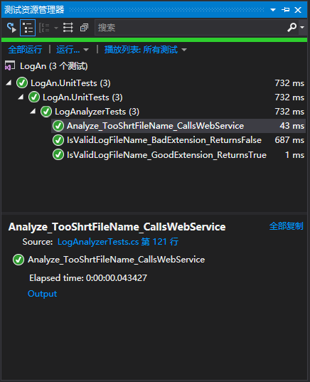
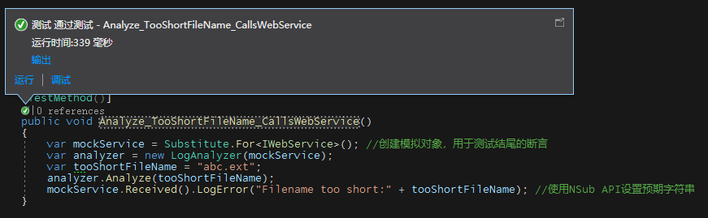
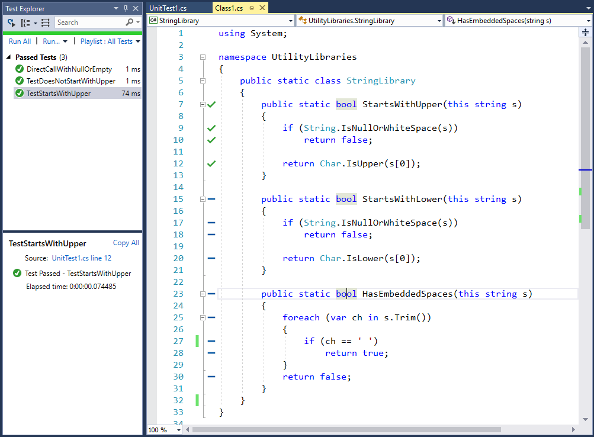
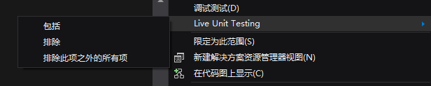
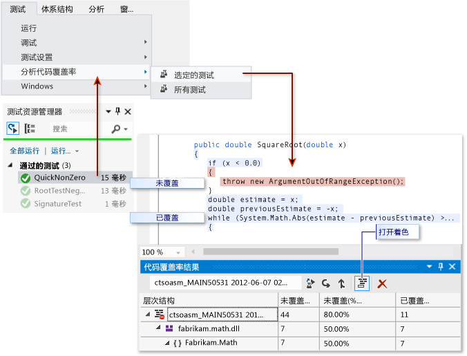
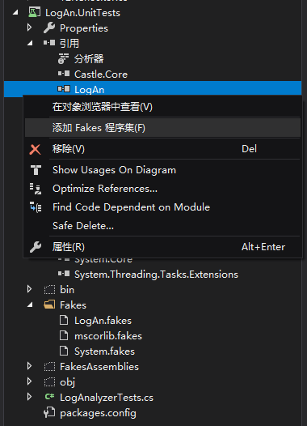
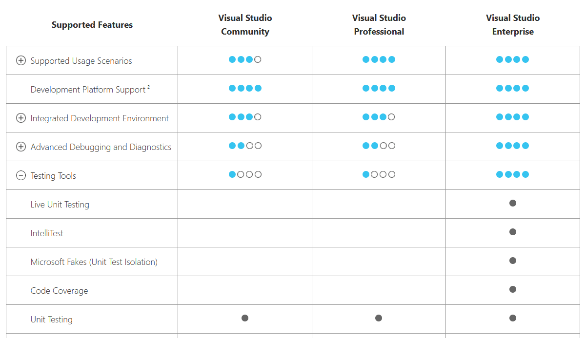
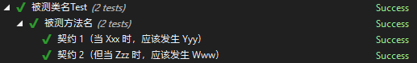

上一篇文章重温了《单元测试的艺术》里提到的单元测试的技术及原则。这篇文章实践使用VisualStudio 2019进行单元测试。
在VisualStudio中通常都会使用“测试资源管理器”进行单元测试。

Professional和Enterprise版本可以使用CodeLens，这大大方便了测试的运行与调试。

但CodeLens的图标常常刷不出来，一些第三方插件（如ReSharper）会更好用。
VisualStudio可以使用Live Unit Test(实时单元测试)，这个功能需要Enterprise版本。

Live Unit Testing 是 Visual Studio 2017 中引入的一种技术。 进行代码更改时，它会自动执行单元测试。
实时单元测试：
让你更有信心地对代码进行重构和更改。 Live Unit Testing 在编辑代码时自动执行所有受影响的测试，确保所做更改不会中断测试。
指示单元测试是否充分覆盖代码，并显示未被单元测试覆盖的代码。 Live Unit Testing 以图形方式实时描绘代码覆盖率，以便一眼就能看到每行代码覆盖的测试数，目和未被任何单元测试覆盖的行。
Live Unit Testing是个很好的功能，唯一的障碍是，如果解决方案中包含了集成测试会导致Live Unit Testing响应变慢。解决方案是创建一个不包含集成测试项目的解决方案，或者在解决方案资源管理器中右键单击想要排除的每个测试项目，然后依次选择“实时测试” > “排除”，这样Live Unit Test就不会对这些项目进行测试。

还是Enterprise版本的功能，Visual Studio的代码覆盖率工具可以很直观地查看到单元测试的代码覆盖率。

微软有他自己的隔离框架Microsoft Fakes(在公司名称后面加Fakes，这命名真是超烂)。不过Fakes不怎么建议使用。
Fakes有两种风格：
Stub(存根) 将类替换为可实现同一接口的小型替代项。
Shim(填充码) 在运行时修改应用的编译代码，这样就可以运行测试提供的垫片代码，而不用执行指定的方法调用。 填充码可用于替换对无法修改的程序集（如 .NET 程序集）的调用。
一般原则是，为在 Visual Studio 解决方案中进行的调用使用存根，并为对其他引用的程序集的调用使用填充码。 这是因为在你自己的解决方案中，通过按照存根要求的方式定义接口来分离组件是一个很好的做法。 但是，外部程序集（如 System.dll）通常没有单独的接口定义，因此必须改用填充码。
其他需要注意的事项还有：
性能。 填充码运行较慢，因为它们在运行时会重新编写你的代码。 存根没有这项性能开销，与虚方法运行的速度一样快。
静态方法和密封类型方法。 你只能使用存根实现接口。 因此，存根类型不能用于静态方法、非虚方法、密封虚方法、密封类型中的方法，等等。
内部类型。 存根和填充码都可用于可通过程序集特性 InternalsVisibleToAttribute 访问的内部类型。
私有方法。 如果方法签名中的所有类型都是可见的，则填充码可替换对私有方法的调用。 存根只能替换可见方法。
接口和抽象方法。 存根提供了可用于测试的接口和抽象方法的实现。 填充码无法检测接口和抽象方法，因为它们没有方法体。
但是由于不建议使用Fakes，所以基本上都会用NSub创建伪对象，Fakes的价值在于Shim，它有些别的隔离框架没有的独特功能。
下面已LogAn项目为例讲解Fakes的用法。首先在单元测试的引用列表右键选中LogAn项目，选择“添加 Fakes 程序集”，然后重新生成方案，这时候可见到项目中多了LogAn.Fakes的引用，以及多了一些Fakes的文件。

使用Stub的单元测试代码如下：
ICalculator calculator = new Fakes.StubICalculator
{
AddInt32Int32 = (arg1, arg2) => 3
};
Assert.AreEqual(calculator.Add(1, 2), 3);重温一下NSub的相同功能：
_calculator = Substitute.For<ICalculator>();
_calculator.Add(1, 2).Returns(3);
Assert.AreEqual(_calculator.Add(1, 2), 3);和NSub不同，Fakes提供的功能少了很多，不仅如此，每次更改项目都可能要重新添加Fakes引用(至少我在编译服务器上的项目老是因为Fakes出错)。所以一般不建议使用Fakes做Stub的功能。但是官方文档中外部程序集（如 System.dll）通常没有单独的接口定义，因此必须改用填充码 这句话却没有错，反正System.dll之类的第三方程序集又不可能经常改变，所以也没有需要重新添加Fakes程序集这个烦恼。下面介绍一下Shim的使用。
假设有一个类：
public static class Y2KChecker
{
public static void Check()
{
if (DateTime.Now == new DateTime(2000, 1, 1))
throw new ApplicationException("y2kbug!");
}
}由于它依赖于DateTime.Now，而假设我们没办法更改这段代码，为了对它进行单元测试我们必须使用Shim破除对DateTime.Now的依赖。首先选中System引用并右键选择添加Fake程序集，然后在测试代码的ShimsContext中插入Shim：
using (ShimsContext.Create())
{
// Arrange:
System.Fakes.ShimDateTime.NowGet = () => new DateTime(2000, 1, 1);
// Act and Assert::
Assert.ThrowsException<ApplicationException>(Y2KChecker.Check);
}如上面代码所示，Shim可以伪造DateTime.Now的值，这对单元测试提供了极大的方便。
虽然Fakes中的Stub不好用，但Shim还是挺有趣的，我建可以同时使用NSub和Fakes里的Shim。善用VisualStudio的各种工具可以大大提升单元测试的效率，不过基本上这些工具都只在Enterprise版本中提供。
有趣的是MSTest自己也没有用Fakes，很多时候都是用moq。(例如PlatformServiceProviderTests.cs)

另外VisualStudio还有一些有趣的工具辅助单元测试，例如walterlv的这篇博客（不再为命名而苦恼！使用 MSTestEnhancer 单元测试扩展，写契约就够了）介绍了一种更直观的单元测试编写方式，不放试一试：

测试工具 - Visual Studio Microsoft Docs
单元测试 - Visual Studio Microsoft Docs
用 Microsoft Fakes 隔离测试代码 - Visual Studio Microsoft Docs